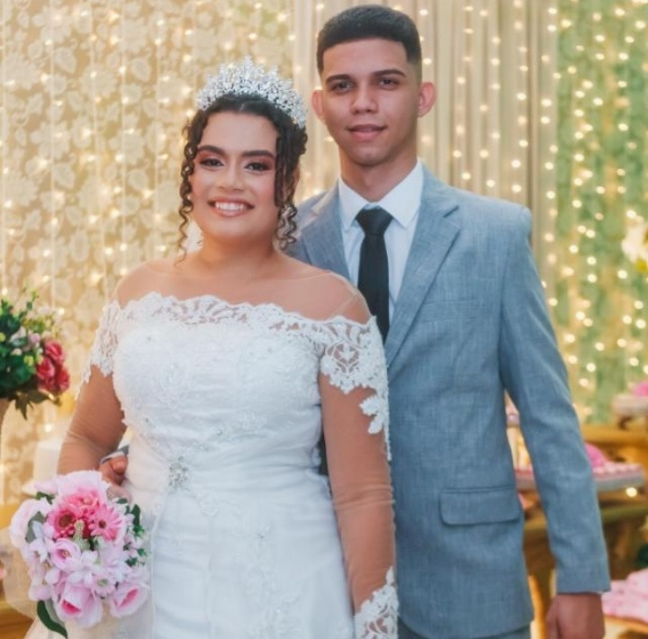
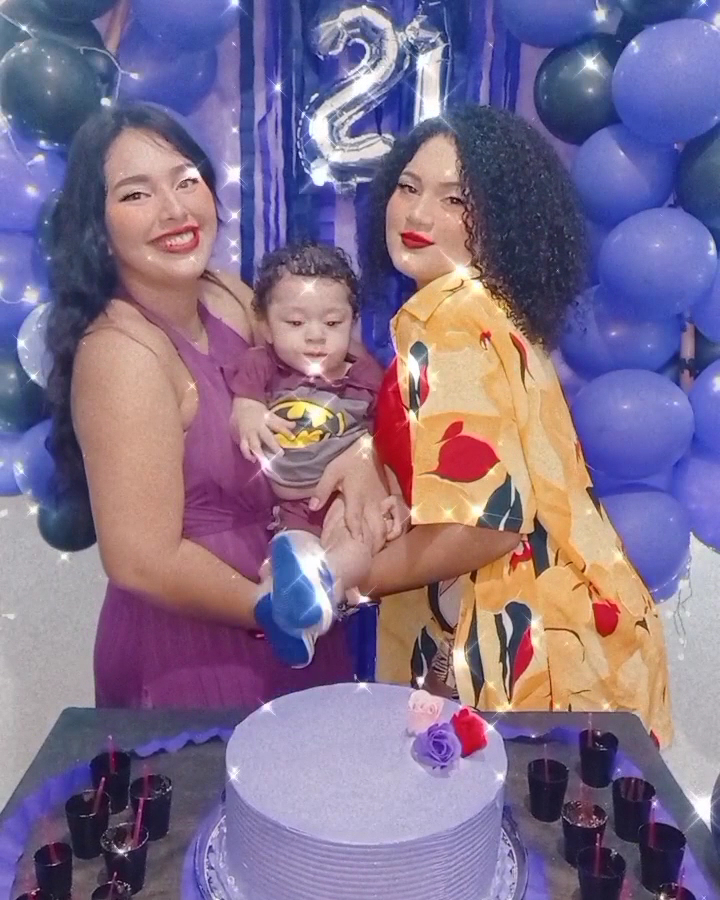
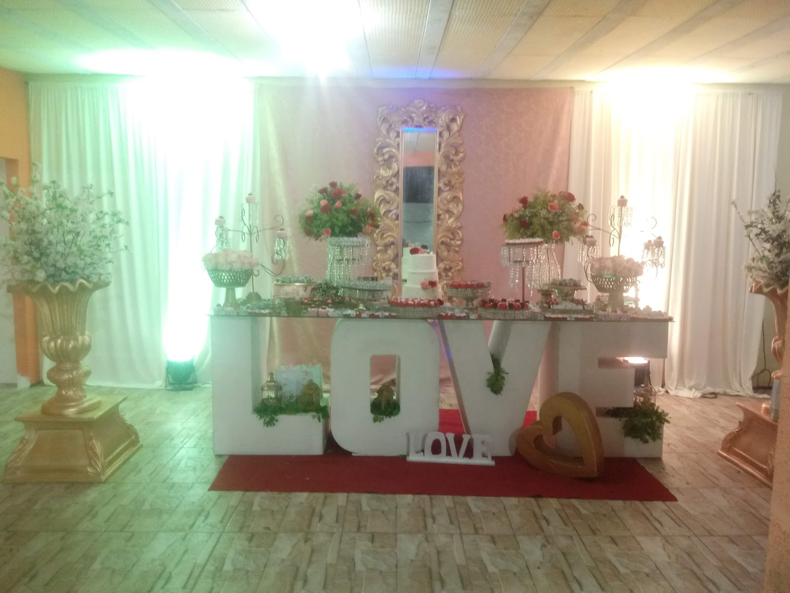
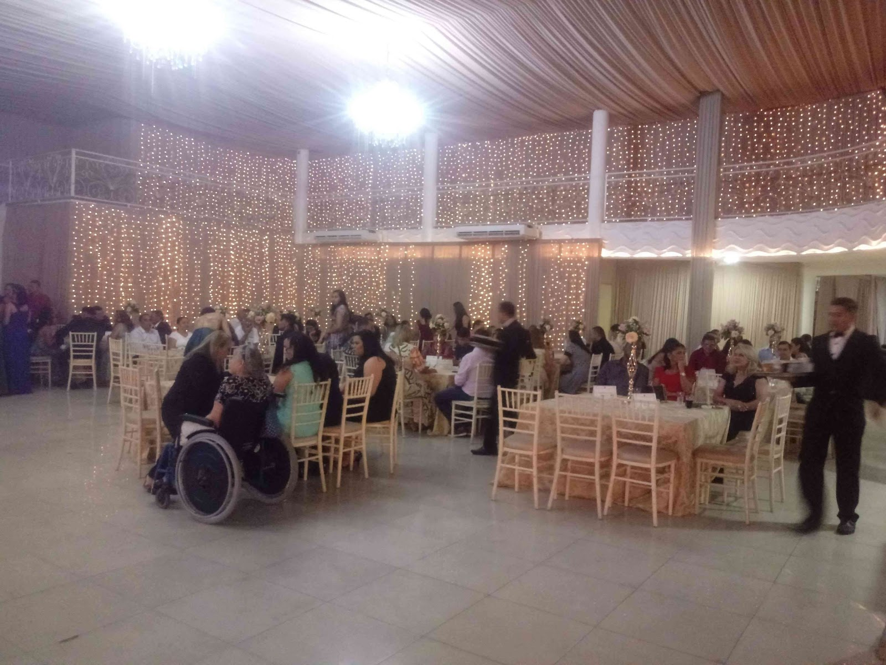
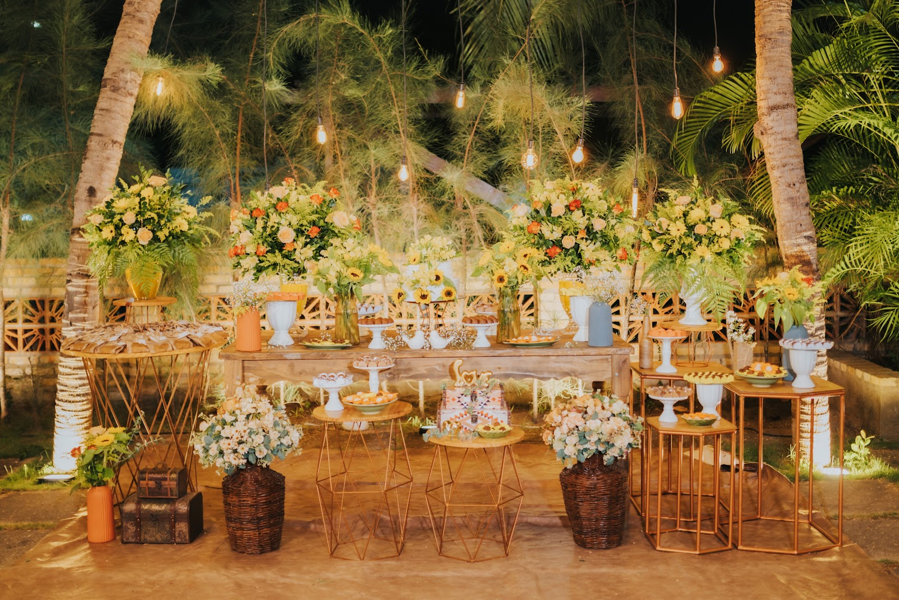

Eventos
De casamentos a aniversários.
Festas grandes e pequenas, em salão ou ao ar livre. Cada uma com o seu tema, todas com o mesmo cuidado.





CasamentosAniversários15 anosBodasFestas em família
Casamentos, aniversários e celebrações planejados com calma e acompanhados de perto no grande dia. Você recebe os convidados; o David cuida do roteiro.

Uma pessoa muito responsável, sem falar que é super profissional.
Arliene, avaliação no Google
Um bom cerimonial aparece pouco e resolve muito. O trabalho começa semanas antes da festa e termina quando o último convidado vai embora.
O primeiro encontro é agendado, para ouvir com atenção o que você imagina: tipo de festa, número de convidados, data e estilo.
Horários, entradas, momentos especiais e contato com os fornecedores organizados num roteiro só, para ninguém se perder.
No dia, o cerimonial coordena a montagem, recebe a equipe e conduz cada momento no tempo certo. A família só aproveita.
Festas grandes e pequenas, em salão ou ao ar livre. Cada uma com o seu tema, todas com o mesmo cuidado.




Cinco perguntas rápidas e você recebe um cronograma sugerido. No final, as respostas seguem organizadas direto para o WhatsApp do David.
O atendimento é com hora marcada. Chame no WhatsApp, conte a data e o tipo de festa e combine o melhor horário.